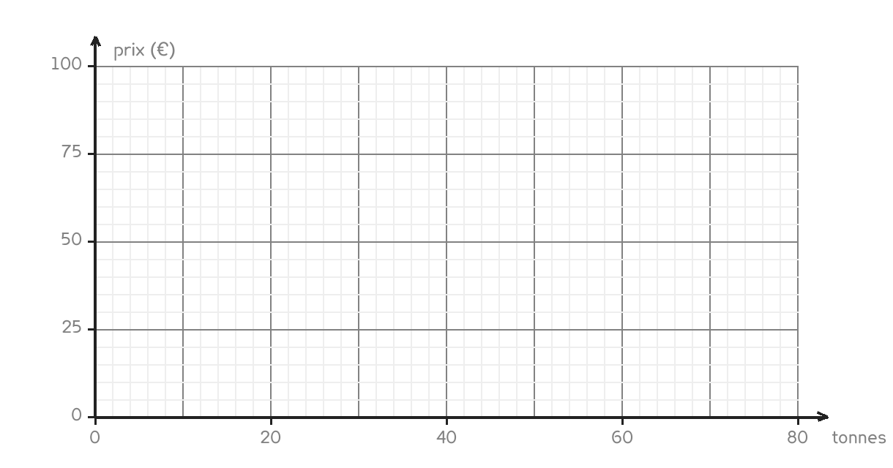

CAP · consolidation maths
Lire un graphique, c'est une chose ; en construire un en est une autre. Tout se joue sur la valeur d'un carreau.
4 questions · 6 exercices · 7 items d'entraînement · 1 repli · 1 figure
Savoirs travaillés

Le carreau d’abord, le point ensuite. Un carreau qui vaut 2 tonnes et non 1 change tous les points de place, et personne ne s’en aperçoit avant d’avoir tracé la droite.
Du gravier à 18 € la tonne : le point « 10 t ; 180 € » se place à 10 sur l’axe du bas et 180 sur l’axe de gauche.
| Masse (t) | 0 | 10 | 20 | 40 |
|---|---|---|---|---|
| Prix (€) | 0 | 180 | 360 | 720 |
On oublie le point de départ. Le point (0 ; 0) fait partie du tableau : c’est lui qui force la droite à passer par l’origine, et c’est lui qui prouve la proportionnalité. Une droite tracée sur trois points seulement peut rater l’origine de peu sans que rien ne le signale.
Pour aller plus loin
Parce qu’une droite répond à toutes les questions d’un coup. Une fois tracée, elle donne le prix de 25 t, de 33 t ou de 7 t sans un seul calcul de plus.
Parce qu’elle montre les erreurs. Un point mal calculé sort de l’alignement et se voit immédiatement, ce qu’un tableau de nombres ne fait jamais.
Et parce que sur un chantier, c’est souvent la seule forme disponible : les abaques de tassement, les courbes de compactage, les diagrammes de charge ne se donnent pas autrement.
Les mêmes séries que sur la feuille. On remplit chaque case, puis on vérifie la série entière d’un coup.
Série · PR
Série · PR
Une fois la droite tracée, on s’en sert sans calculer.
Exercice · AA
Combien coûtent 25 tonnes de gravier ?
Exercice · AA
Quelle masse de gravier obtient-on avec 540 € ?
Exercice · AA
Quel est le prix d’une tonne, lu sur le graphique ?
Exercice · AA
La droite tracée passe-t-elle par l’origine ? Dites-le, et dites ce que cela prouve.
Deux questions qui sortent du cadre de la feuille.
Exercice · AA
La grille s’arrête à 40 t. À partir de quelle masse le prix dépasse-t-il 1 000 € ? Donnez la première masse entière qui convient.
Exercice · AA
Un second fournisseur vend à 18 € la tonne mais ajoute 60 € de livraison. Où sa droite couperait-elle l’axe de gauche, et serait-elle parallèle à la première ?
Fiche de consolidation. Aucun corrigé ; rien n'est enregistré, rien n'est noté.